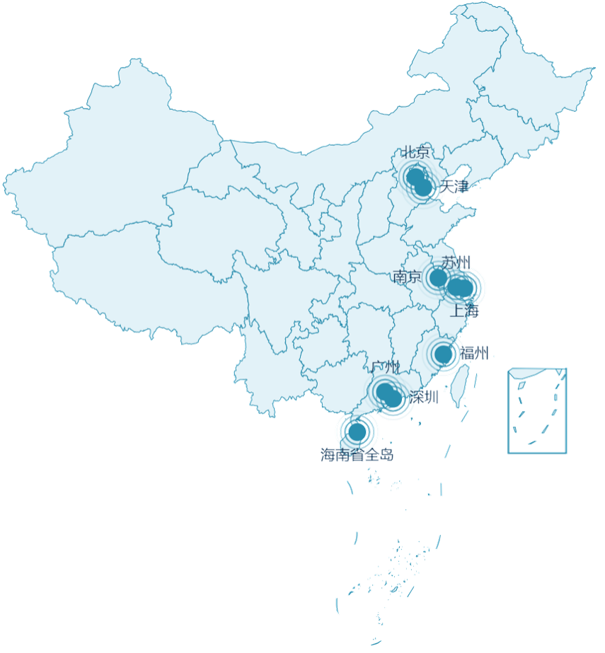
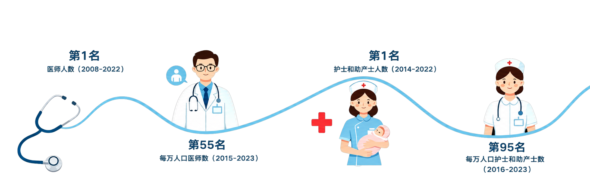

近年来，我国国际医疗行业的规模与日俱增。2023年至2025年，国内提供国际医疗的机构数量从186家稳步增长至253家。接诊量更是呈现突破式增长，从210万人次升至412万人次，带动行业营收从386亿元翻番至826亿元。
2023-2025年中国国际医疗行业相关数据
数据来源：国家卫生健康委员会、中国医院协会国际医疗服务专委会、弗若斯特沙利文行业调研数据
国家卫生健康委员会2025年度涉外医疗服务报告的数据进一步印证了这一态势。2025年，全国重点涉外医院接诊国际患者达128万人次，较2022年大幅增长73.6%。
全国重点涉外医院接诊国际患者人次
数据来源：国家卫生健康委员会
数据体现的不只是数量的增长，更折射出结构性的变化。来华就医，正在从少数人的偶发选择，逐渐转变为一条可预期、可规划、可执行的医疗路径。
越来越多患者跨越国界来到中国，他们来自何处？因何而来？又为何将求医的终点落在中国？在这场持续升温的“来华就医”现象背后，一幅关于全球患者流动、医疗资源再分配与全球健康治理的图景正徐徐展开。
与此同时，这也让国内涉外医疗体系直面全新的现实考验。随之而来的问题是，我们的医疗系统，做好“迎客”的准备了吗？
目前，国内接诊的外籍患者仍以在华常住人口为主（占93.8%），专门从海外赴华求医的患者占6.2%。
在客源地分布上，东南亚患者是主力军，占比达48.3%；欧美患者紧随其后，占比32.7%，其他地区占19.0%。
数据来源：国家卫生健康委员会、各重点城市国际医疗运营报告
虽然当前在华常住人口仍是基本盘，但一个不可忽视的爆发点是，专门为“看病”而入境的短期旅客正在急速增多。
以全球小商品之都义乌为例，义乌市卫健局的数据显示，2025年义乌外籍人士就医总人次超过7.1万，同比增长24%。
数据来源：义乌市卫健局
而其中，非常住外籍人士（即短期入境者）的就医比例，从2023年的30%增长至2025年的约50%。这意味着，在义乌看病的外国人中，专门入境或顺道看病的人数增加了超万人，比例已经达到了一半。
义乌市外籍人士就医短期入境占比
数据来源：义乌市卫健局
医疗就医，正在成为部分外籍人员来华国际流动最重要的目的本身。
从病种结构来看，外籍患者就医的疾病类型多元，其中最核心的两类是慢性病、疑难病，
二者分别占比40%和30%，这构成了外籍人士跨境就医的主要诉求。
外籍患者来华就医的主要疾病类型
数据来源：中国医院协会国际医疗服务专委会
“来华就医”并不是一个简单的单一命题，而是一份份差异化需求。因此，针对不同的疾病，外籍患者的“寻医地图”也各具特色。
在海南、上海、广东等医疗资源丰富且集中的核心地区，
外籍患者的就医需求深度绑定了医院的优势学科、重点专科，呈现出“就诊科室多元化，以疑难重症攻坚为核心”的特点。
这里不仅为常驻外籍人士提供日常疾病诊疗，更成为全球患者寻求肿瘤治疗、复杂整复外科手术、神经外科及疑难眼病等顶尖医疗的目的地。
🏝️ 海南省
海南博鳌乐城国际医疗旅游先行区已经成为海南吸引海外医疗消费旅游的一张亮丽名片，初步形成了7大优质专科。
👆悬浮卡片查看热门科室
🏙️ 上海市
2025年，复旦大学附属华山医院国际部收治了来自全球90个国家及地区的患者，除日常诊疗外，越来越多境外患者慕名而来。
上海交通大学医学院附属第九人民医院（北部）特需病区开业至今已接诊来自多国的15名患者，覆盖多个专科领域。
👆悬浮卡片查看热门科室
🏙️ 广东省
香港大学深圳医院的诊疗范围涵盖脊柱外科、儿科、肿瘤学科、胃肠外科、心血管内科、产科、消化内科等众多科室。其中，脊柱外科是外籍人士就诊的热门科室之一。
👆悬浮卡片查看热门科室
而在云南、黑龙江等边境省份，跨境就医则呈现出更强的地缘性。
患者往往来自邻国，需求集中于高血压、糖尿病等基础慢病管理，针灸、推拿、艾灸等中医康养服务有效弥补了周边国家医疗资源的不足。
鼠标置于卡片上方，查看更多内容
云南省
勐腊县人民医院
2024年，
该院接诊外籍患者同比增长89%，
其中，老挝患者占比达97.26%。
跨境就诊患者以高血压、糖尿病、
呼吸系统感染和消化道疾病为主。
黑龙江省
绥芬河市人民医院
2024年，
黑龙江绥芬河市人民医院
接待外籍患者突破1万人次，
针灸、推拿、艾灸
以及基因检测等项目受到青睐。
黑龙江省
黑河市中医医院
该院专门成立国际医疗部，
开设国际诊疗体检区，
针对俄罗斯人体质特点，
推出针灸、推拿、刮痧等特色服务
及定制化体检套餐。
从顶尖疑难重症到日常慢病管理，从现代医学到传统中医，中国医疗构建了一个多层次、全覆盖的服务体系。
这种“全链条”的服务能力，让不同需求、不同支付能力、不同地域的患者都能在中国找到适合自己的医疗解决方案。
为什么全球患者开始将目光投向东方？TikTok等社交媒体平台上的讨论或许能给出最直观的答案。
价格方面，TikTok平台中的用户讨论多聚焦于“本国医疗费用昂贵”、而“中国费用较低”，在本国治病甚至可能导致“破产”。
🏥 国际患者弹幕墙 · 价格篇 💴
鼠标置于弹幕，可悬停查看
数据来源：TikTok标签“#china health care”中的用户评论
关于中外医疗的价格差异，Nico和Mr.A想和你详细分享他们的经历。
-
@Nico
最近我注意自己身体有些不适，去医院检查时被告知需要手术治疗。
在中国，从住院到出院，全部费用不到15000人民币，同样的手术，在南非和土耳其至少30000人民币起步。
-
@Mr.A
我在菲律宾心脏不适，当地私立医院建议做心脏造影，费用约10000多人民币。
由于没有当地医保，我的家人对比后发现，同样的手术在中国深圳仅需3000多元人民币。
考虑到深圳的医疗水平更先进，且我的家人曾在此居住，对当地医疗环境熟悉，我们决定前往深圳治疗。
效率方面，国际患者声称在本国治疗需要等待极长的时间，甚至几个月也无法见到医生。
或许你还记得艾米？在英国胃痛持续两年无法见到医生，
而在中国仅用13天就完成了从检查、诊断到治疗的全流程。
🏥 国际患者弹幕墙 · 效率篇 🩺
鼠标置于弹幕，可悬停查看
数据来源：TikTok标签“#china health care”中的用户评论
关于中外医疗等待时长的差异，马修和Brennan深有体会。
-
@马修
16岁开始，扁桃体炎就像噩梦一样缠着我。
三年了，美国的医生只能开止痛药和激素，手术排期要等整整六个月，术前检查还要再等四个月。
但大学马上开学，我真的绝望了。6月底，我抱着最后一丝希望飞到了中国。
我顺利接受了手术治疗，从踏进诊室到告别三年的噩梦，只隔了三天。
-
@Brennan
腰椎和鼻窦炎折磨了我很久，在加拿大公立医院就是开止痛药，然后让我回家等，这一等就是好几个月，连手术的影子都见不着。
实在熬不住了，我飞了13个小时到广州，没想到从走进门诊、办住院、做检查到做完鼻内镜微创手术，全过程只用了3天。
在加拿大等几个月都等不到的治疗，在中国3天就搞定了。
一边是海外患者日益迫切的健康需求，一边是本土医疗系统难以承载的压力，全球多地正陷入不同程度的医疗困境。具体来看，疾病负担较重、等待时间过长、治疗费用高昂，是迫使外籍患者踏上跨国求医之路的重要推力。
首先，居高不下的疾病负担是驱动患者外流的根本原因。
在公共卫生领域，“伤残调整寿命年”（DALY）是一个衡量疾病负担的关键指标，它指从发病到死亡所损失的全部健康寿命年。DALY数值越高，意味着该国国民受疾病折磨越深、整体健康负担越重。
通过观察健康指标与评估研究所（IHME）提供的1990年至2023年的数据走势，我们可以清晰地看到，美国、英国、德国、波兰等 欧美国家在肌肉骨骼疾病、糖尿病和肾病、消化系统疾病以及肿瘤等领域的DALY数值，长期处于较高水位且呈现上升趋势。相比之下，中国在多项指标的控制上表现出更为平稳的态势。大量欧美患者长期处于“带病生存”的状态，迫切需要更高效的医疗干预。
1990年-2023年各国的疾病负担分布
数据来源：健康指标与评估研究所（IHME）
“排队难”更是全球医疗的普遍痛点。据中国日报网此前的报道，近40%英国公立医院科室治疗等待时间超18周。在我国，三甲医院普通门诊平均候诊时间一般不足30分钟，急诊抢救响应时间仅需5分钟。
具体到诊断测试项目，英国国民医疗服务体系（NHS England）披露的2025年15项诊断检测数据显示，平均每个患者自全科转诊至完成任意一项诊断测试的等待时间为2.6周。其中，哪怕是耗时最短的CT检查也需等待1.83周，而电生理等复杂检查的等待时间更是高达6.06周，共有4项诊断测试的等待时长超过1个月。对于需要紧急治疗的患者而言，这样的等待周期可能意味着病情的延误，甚至错过最佳治疗时机。
2025年英国十五项诊断测试等待时长分布情况
数据来源：英国国民医疗服务体系（NHS England）
费用则是绕不开的另一重现实考量。结合经济合作与发展组织（OECD）统计的个人及家庭自愿自付医疗费用（即扣除医保报销后，民众需要自行承担的医疗支出）不难发现，发达国家居高不下的自付成本，正推动不少患者选择跨境就医。以2022年为例，美国与加拿大的人均自愿及家庭自付医疗费用分别高达2088美元和1994美元，而同期中国的这一数字仅为551美元。这意味着，北美患者在本国的平均自付开销，几乎是中国的3.6到3.8倍。即便算上机票和住宿的成本，患者在中国就诊的综合支出依然远低于在本国治疗的成本。
2015年-2022年各国人均自愿及家庭自付医疗费用分布
滑动滑块可筛选具体费用区间
数据来源：经济合作与发展组织（OECD）
而在东亚、南亚、东南亚的一些发展中国家，问题更多体现在医疗可及性和质量的差距上。对于欠发达地区的患者而言，他们难以在本地获得足够稳定、及时且有保障的医疗服务。这使得中国成为了这些国家的患者“向上寻医”的更优解。
2019年各国医疗服务可及性与质量（HAQ）指数
数据来源：Assessing performance of the Healthcare Access and Quality Index, overall and by select age groups,
for 204 countries and territories, 1990–2019: a systematic analysis from the Global Burden of Disease Study 2019
海外医疗的短板，成为中国涉外医疗崛起的契机。中国之所以能够承接这股跨境流动，关键在于国际医疗服务基础设施正逐步完善。中国医院协会国际医疗服务专委会报告显示，据不完全统计，2024年中国境内（不含港澳台）共有57个城市的850家医疗机构开展国际医疗服务。这意味着，国际医疗已不再只是少数几家头部医院的能力，而是正在形成更广泛的服务网络。
同时，国际医疗重点推广城市也在持续扩容，北京、上海、广州、深圳、海南（全省）、天津、南京、苏州、福州等地逐步形成承接国际患者的核心区域。

2026年3月，广东省卫生健康委、省医保局、省药监局联合公布首批广东省国际医疗服务试点医院名单，来自广州、深圳、珠海、佛山、汕头五地的25家医院成功入选，这标志着广东省国际医疗服务试点工作正式落地实施。
广东省首批国际医疗服务试点医院
滚动鼠标滑轮缩放地图
此外，海南和上海依托地理位置、医疗资源等优势，成为入境医疗旅游热门地，客源所覆盖国家及地区数量众多。
作为我国唯一的“医疗特区”，海南自贸港博鳌乐城国际医疗旅游先行区（以下简称乐城）汇聚高水平医疗机构和顶尖优质医疗资源，成为入境医疗旅游的核心承载地。
海南博鳌乐城文化产业发展有限公司副总经理胡璐介绍，2025年，乐城立足海南得天独厚的生态与旅游资源，深度融合知名专家诊疗、特许医疗、中医理疗等特色医疗资源，精心打造并推出国际医疗旅游线路，当年便接待入境医疗旅游游客超9300人次，客源覆盖印度尼西亚、马来西亚、老挝、加拿大等14个国家。
上海则凭借高水平医疗资源与国际化城市环境，成为外籍患者密度极高的就医窗口。
新浪财经报道2025年上海公立医院服务外籍患者7.32万人次，同比增长8%。其中，复旦大学附属华山医院收治的外籍患者覆盖全球90个国家及中国港澳台地区，客源国前五分别为美国、日本、加拿大、澳大利亚和德国。
如果说完善的医疗基础设施是中国承接全球患者的“硬实力”，那么持续优化的入境政策与便利化措施，则是降低跨国就医门槛的“软实力”。从2013年到2026年，中国的对外免签政策呈现出持续扩容的趋势。其中，单方面免签国家数量从最初的不足10个增长至如今的30余个，互免普通护照签证的国家数量也稳步增加。特别是2023年以来，中国密集出台了一系列入境便利化措施，包括延长免签停留时间、简化签证申请流程等。
我国对外免签政策变化
数据来源：中华人民共和国外交部
有序扩大单方面免签国家范围、优化区域性入境免签政策、持续完善签证、通讯、住宿、支付等便利措施，这些变化共同降低了外籍患者来华的制度成本。“说走就走”的跨国就医正变得前所未有地简单。
从全球视野来看，医疗旅游市场正是一片广阔的蓝海。据智库机构Grand View Research预测，全球医疗旅游市场规模将从2025年的340亿美元，以14.1%的复合年增长率，攀升至2035年的1262亿美元。来华就医的热潮，让中国医疗旅游站上了全球风口。中国的医疗旅游虽然处于初步阶段，但潜力巨大。
然而，热潮之下仍有不可忽视的隐忧。
首先是人才资源的稀缺。
根据《2025中国卫生健康统计年鉴》统计的医师卫生资源，医师人数（2008—2022）、护士和助产士人数（2014—2022）总数在183个国家中排名第一，但引入人口基数变量后，中国的各项指标排位出现了明显后移，前者退居到了第55名，后者跌至第95名。这一结果体现了中国在医疗资源配置上呈现出总量庞大，但人均占有量居中的现状。我国每万人口的医师、护士数量在国际排名中依然不具备明显优势，在面对庞大且不断增长的涉外医疗需求时，医护资源的挤占引发了一定的担忧。

其次，“水土不服”的软性障碍依然存在。
在上海含有国际医疗服务的医院开展的一项调查显示，语言障碍是外籍患者反映最普遍的问题，高达65.8%的受访患者因与医护人员沟通不畅而感到困扰。此外，信息壁垒也让部分患者望而却步——71.4%的外籍患者在接受治疗前对上海医院的服务水平缺乏了解，而即便在通过正式渠道获取信息的17.1%的患者中，大多数也认为信息不够翔实，难以有效指导就医选择。
信息的不充分，意味着许多潜在患者即便已经对中国医疗产生兴趣，也仍然停留在“知道有这个可能”，却不知道“该如何抵达”的阶段。这也提醒我们，要想搭建好这座跨国求医的桥梁，还需要耐心打通语言和信息上的“最后一公里”。